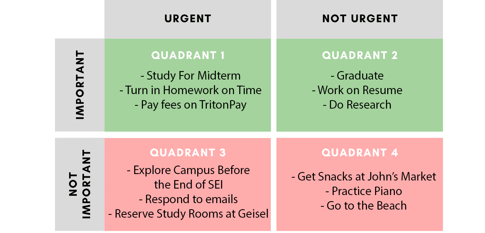

Hi, I'm Ethan
Welcome to my web porfolio for ENG15. I'm Ethan Schwartzman, a computer science major at UCSD. I can't wait to learn and develop many lifelong skills in the coming years! I'm always looking for new challenges and opportunities!

Defining Success
To me, success means not only doing well academically, but also in my professional and personal spheres as well. It means staying healthy both physically and mentally. To succeed I aim to be happy, motivated, and constantly learning!
"Do or do not.
There is no try."
- Yoda
Long Term Goal
My long term goal is to complete the BS/MS program in computer science in five years or less. Getting my degree will open many doors and job opportunities. This involves maintaining a cumulative GPA of 3.4 and a few other additional requirements.
Short Term Goal
One short term goal I have is to join at least two student organizations in the upcoming fall quarter. This will allow me to become involved in the community, gain project and leadership experience, and be social and make friends along the way.
Short Term Goal
Another short term goal I have is to try get good sleep during the SEI program, at least 8 hours a night. This will help me to perform better in my 8 AM class and will generally improve my mood and focus.
Priority Matrix
In quadrant I, I put “study for midterm, turn in homework on time, and pay fees on TritonPay” as important and urgent. In quadrant II, I put “graduate, work on resume, and do research” as important but not urgent. These tasks are important to me because they relate to my education and career. Doing well in my classes and ultimately getting my degree is necessary to pursue many programming jobs and move onto my life as an independent adult. These align with my SMART goals since both have a focus on education and the future. It can be difficult to make the distinction between important and unimportant since it is hard to discern what will be of significance in many years from now. Of course it is important to do well in school and earn my degree, but what about making friends, being social, and taking time for myself. Some relationships and bonds might last a lifetime and some might be forgotten. It was also difficult to classify tasks as important but not urgent. In many cases, important tasks are also urgent, these factors are often correlated. However, any task with a deadline can become urgent as it approaches, it isn’t always necessarily important.
Procrastination can be a significant obstacle to the effort and time put into an urgent task. For me personally, years of difficult high school classes have drilled a strong work ethic into my routine, but I still see how procrastination affects many. One strategy for fighting procrastination is to just start an assignment, which is often the hardest part. No matter how tired or unwilling, just setting a fifteen minute timer and beginning the work can help breach that initial barrier. Also studying or doing homework in a group can help make the experience more bearable. Even with a good work ethic, it can still be tempting to leave work for the last minute. This is especially true if it is slow, tedious, tiring, or just a drag to complete. It can also be easy to procrastinate when the task is very challenging or difficult. A strategy for this is to split the task into manageable parts and do one each day until the deadline. If this is the case then it is important to stick to the plan and not fall behind. It can also be helpful to use an incentive or reward like leisure time upon completion of the task.
feel free to reach out at
eschwartzman@ucsd.edu